For the office / admin person. How to set up each day's deliveries: import the delivery forms, put a driver on each lorry, and print the combination invoices.
Updated 26 November 2026 for the restyled Shipments page and the Combination Invoice sheet without QR code.
Button, box and message names in this guide are written exactly as they appear on the page, so you can match them on screen. Words in italics inside a message change from case to case (a lorry number, a count, an amount). The page has the title Shipments in the dark blue bar at the top.
All pictures use made-up sample data. Click a picture to see it full size.
Two branches · Dua cawangan: each branch is managed separately. Open YOUR branch's link — you will see and manage only your own branch's lorries and drivers · Buka pautan cawangan ANDA — anda hanya melihat dan menguruskan lori dan pemandu cawangan anda sendiri. MTK (Mentakab) and KTN (Kuantan) are kept separate · MTK dan KTN diasingkan.
The Shipments page is your daily setup screen. Each morning you use it to do three jobs:
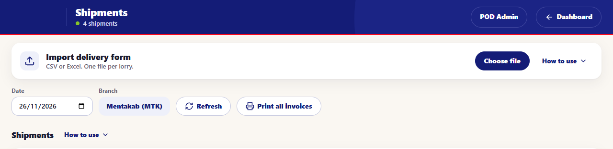
| On screen | What it is |
|---|---|
| Shipments (top bar) | The page title. The small line under it counts the cards for the chosen date, for example 4 shipments, or says No shipments. |
| POD Admin, Dashboard | Links to the POD Admin page (opened for your branch) and to the fleet Dashboard. |
| Import delivery form | The import row. Under the title it says CSV or Excel. One file per lorry. |
| Choose file | The dark blue button you press to pick a delivery form file. |
| How to use | Opens a short reminder of the steps. There is one beside Choose file and one beside the Shipments heading of the list. Press it again to close it. |
| Date | The day whose shipments are shown. It opens on today. |
| Branch | Shows the branch this link is for. You cannot change it on the page (see section 3). |
| Refresh | Loads the newest list for the chosen date. |
| Print all invoices | Opens the Combination Invoice page for every lorry of this date and branch (see section 8). |
The page opens straight away. It has no sign-in box of its own. What it does is this:
| What you do | Sign-in |
|---|---|
| See the shipment list | The page quietly uses the office sign-in that this browser already has from the POD Admin page. If this browser has none, the list is refused (see below). |
| Import a file, Save crew, Delete shipment, open the print page | The page does not ask for a sign-in for these. |
| Hand a shipment to a salesman, or take it back | Needs the office sign-in. If this browser has none, two small browser boxes ask for it: Office unlock - Staff ID, then PIN:. Sign in with your Staff ID and PIN. |
| The Combination Invoice page | No sign-in. |
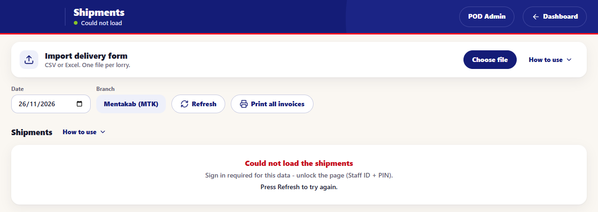
You see the red title Could not load the shipments, a grey line from the server saying a sign-in is required, and Press Refresh to try again. Pressing Refresh alone does not help, because this page cannot sign you in. Do this:
The sign-in is kept by the browser. Use the same browser on the same computer for POD Admin and for this page. A different browser, a private window or another computer has to sign in again.
A day with nothing imported shows No shipments for 2026-11-26 and Import a delivery form above to start.
The Branch box shows Mentakab (MTK) or Kuantan (KTN). It is not a button: the branch comes from the link you opened.
?branch=MTK, the Kuantan link ends with ?branch=KTN.Before you import or assign, look at the Branch box. If it shows the wrong branch, close the page and open your own branch's link.
The page accepts three file types: .csv, .xlsx and .xls. One file per lorry. For an Excel file only the first sheet is read.
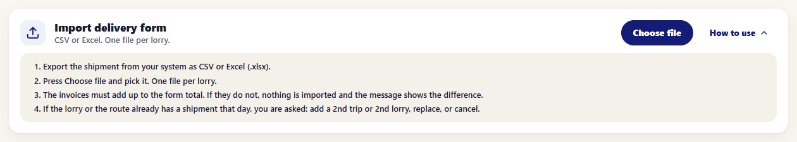
The page does not send the Date box with the file. The shipment is filed under the delivery date written in the form. If the form is for another day, change Date to that day to see the new card.
A green message at the bottom says:
Imported WTB 5678: 8 invoices.
The list reloads and the lorry has a card, tagged Imported.
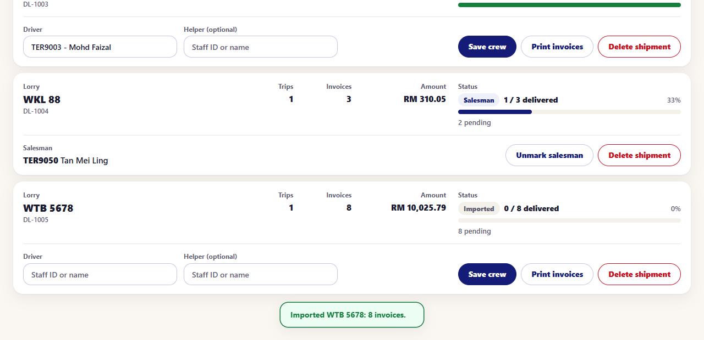
If the green message ends with (auto-recovered), the file was read a second way. The import still succeeded. Check the card as below.
Because there is no preview, you check after the import, on the new card. Hold the printed delivery form next to the screen:
If any of the three is different, do not send the lorry out on that card. Delete the card (section 7), export the form again and import it again. If it is still different, tell your supervisor.
If the invoices in the file do not add up to the total written on the form, the file is refused. A red message says:
TOTAL ERROR: invoices add up to RM 10,025.79 but the form TOTAL is RM 10,225.79 (off by RM 200). NOT imported. Check the file, then import again.
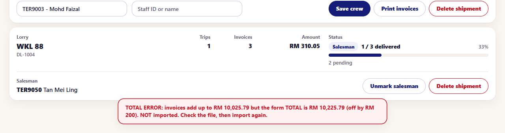
Nothing was imported. What to do:
If the lorry, or the route, already has a shipment that day, the page stops and asks you in a small browser box with OK and Cancel. Read the box before you press. Nothing is changed until you answer.
Case A — the same lorry already has another shipment today. The first box says:
⚠ WTA 1234 already has a shipment today (12 stops, 0 delivered).
This NEW file has 8 stops.
OK = ADD these as a 2nd trip (keep the first — already-done stops stay done).
Cancel = other options.
Replace / overwrite the first shipment with THIS file?
OK = REPLACE (the first one is removed).
Cancel = do nothing.
⚠ DANGER — Replace will DELETE the first trip, INCLUDING its 3 DELIVERED stop(s) (they disappear from the dashboard).
Only do this if the first import was a mistake.
OK = DELETE first & replace.
Cancel = do nothing.
Case B — the same route (same shipment number) is already on another lorry. The first box says:
⚠ Route DL-1001 is already assigned to WTA 1234 (12 stops, 0 delivered).
This new form is for WTB 5678.
OK = Add WTB 5678 as a 2nd lorry on the SAME route (both lorries share this delivery list — counted once, no double-count).
Cancel = other options.
Replace WTA 1234 with WTB 5678 on this route?
OK = Replace.
Cancel = do nothing.
⚠ DANGER — Replace will REMOVE WTA 1234 from this route, INCLUDING its 3 DELIVERED stop(s).
Only do this if WTA 1234 was assigned by mistake.
OK = Replace with WTB 5678.
Cancel = do nothing.
Do not press OK on a box that starts with ⚠ DANGER unless the first import really was a mistake. Delivered stops are removed. If you are not sure, press Cancel and ask your supervisor.
Case C — the very same form again (same route, same lorry). No box is shown. You get the normal green Imported message. Check afterwards that the lorry still has one card and that Invoices and Amount are right.
You can pick the same file again at any time: the file picker is cleared after each try.
Under the heading Shipments there is one card per shipment.
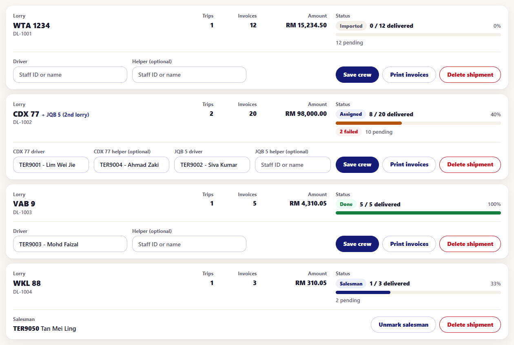
| Column | What it shows |
|---|---|
| Lorry | The lorry number in large letters. Under it, in small letters, the shipment (route) number. If two lorries share the route you also see + JQB 5 (2nd lorry). |
| Trips | How many trips the lorry has on this card. A dash means the server sent no number. |
| Invoices | How many invoices are planned on this card. |
| Amount | The total of the invoices, in RM. A dash means the server sent no amount. |
| Status | A tag, then how far the deliveries are, for example 8 / 20 delivered with the percentage and a bar. Under the bar: a red 2 failed if any delivery failed, and 10 pending for what is still to deliver. |
| Tag | Meaning |
|---|---|
| Imported | The form is in, but no driver is saved yet. This is your to-do. |
| Assigned | A driver is saved on this shipment. |
| Done | Every planned invoice on the card is delivered. The bar is green. |
| Salesman | The shipment was handed to a salesman. The card shows the salesman instead of crew boxes. |
The bar is dark blue when nothing is delivered yet, orange-brown when the lorry is part-way or has a failed delivery, and green when all is delivered.
A card with the tag Salesman has only Unmark salesman and Delete shipment.
Each card has two crew boxes:
An empty box shows the hint Staff ID or name.
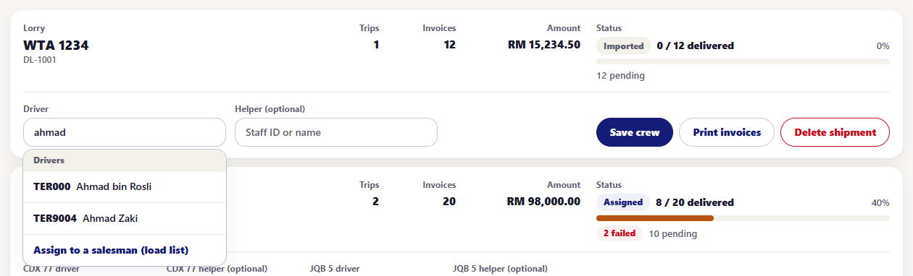
A green message confirms it, and the tag on the card becomes Assigned:
Assigned DL-1001 → Ahmad bin Rosli + Lim Wei Jie
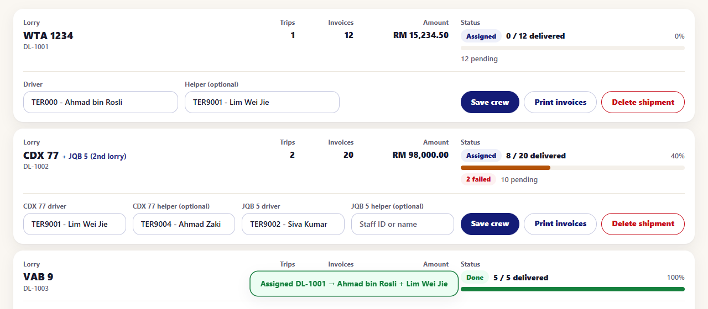
You must click a person in the list. Typing a name and stopping is not enough. If you press Save crew with no driver picked you see Pick a driver first: type a staff ID or a name, then choose from the list. and nothing is saved.
If the list shows No match, nobody in your branch's driver list fits what you typed. Check the spelling or try the Staff ID.
When two lorries share one route, the card has four boxes, named after the lorries: CDX 77 driver, CDX 77 helper (optional), JQB 5 driver and JQB 5 helper (optional). Fill them the same way and press Save crew once. The first lorry's driver is required. The green message then also names the second lorry's crew after 2nd lorry:.
Use this when a salesman delivers the shipment himself, not a lorry driver.
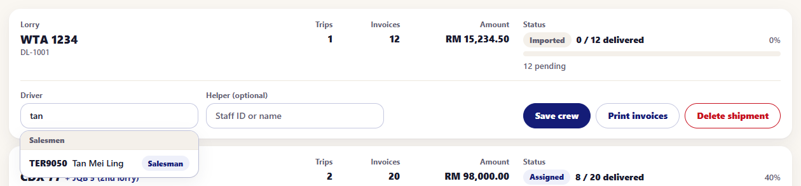
To take it back: press Unmark salesman on the card. A browser box asks Remove the salesman from DL-1004? and says The previous driver crew (if any) is restored and the DL returns to the lorry flow. Press OK. The green message is Unmarked DL-1004.
If you imported the wrong file, you can remove the card with the red-edged Delete shipment button on that card.
Use this only to clean up a mistaken import. Do not delete a real shipment that is out delivering. A delete cannot be undone.
When you press Delete shipment, a browser box asks:
Delete shipment DL-1001?
This removes the lorry card and all its invoice rows. This cannot be undone.
If the shipment has no deliveries yet, it is deleted now. Green message: Deleted DL-1001 (12 invoice rows removed). The card is gone.
If drivers have already delivered invoices on that shipment, the delete is stopped and a second box appears. It starts with ⚠ and a line from the server that counts the delivered invoices, then asks:
Delete ANYWAY? The lorry card and invoice rows are removed, but the delivered POD photo records are KEPT (driver KPI is unaffected).
| Removed | Kept |
|---|---|
|
|
If you delete by mistake, import the file again and assign the driver again.
The Combination Invoice is the sheet the customer signs when the goods arrive. There is one sheet for each customer on a lorry. Each sheet lists that customer's invoices for the lorry.
A new browser tab opens with the title Combination Invoice. The date, the branch and (for one lorry) the lorry number are already filled in, and the sheets load by themselves.
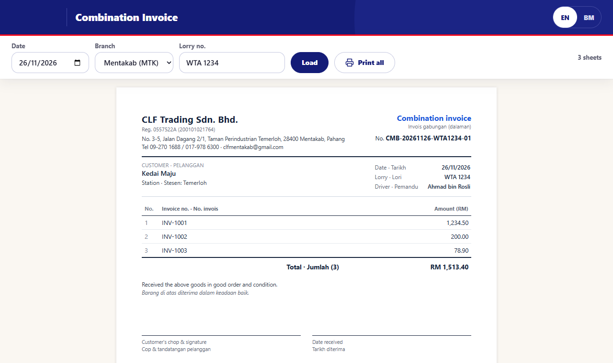
There is no QR code on the sheet any more (since 26 November 2026). The customer signs and chops the sheet; nobody scans it.
The words on the sheet are always printed in English and Malay together. If Driver on a sheet shows a dash, save the crew on the Shipments page first, then press Load again.
Print all is grey until sheets are on the screen.
If you open the page on its own (not from the Shipments page), it shows Pick a date, then press Load and loads nothing until you press Load.
The switch at the top right changes the language of the boxes, buttons and messages on the screen. In BM, Load is Cari and Print all is Cetak semua. The browser remembers your choice. The printed sheet is the same in both.
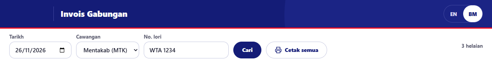
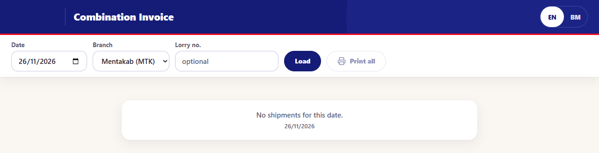
| Message (EN / BM) | What it means and what to do |
|---|---|
| No shipments for this date. Tiada shipment untuk tarikh ini. | Nothing was found for the date, branch and lorry in the boxes. The date is shown under the message. Check the three boxes (a typing mistake in Lorry no. is the usual cause), then press Load. If the delivery form is not imported yet, import it first. |
| Cannot reach the server. Check your internet, then press Load. Tidak dapat sambung ke sistem. Semak internet, kemudian tekan Cari. | No connection. Check the internet, then press Load. |
| Could not load. Try again. Gagal memuatkan. Cuba lagi. (or a line from the server in its place) | The server answered with a fault. Press Load again. If it stays, note the words on the screen and tell your supervisor. |
| Loading… Memuatkan… | Wait. The sheets are on their way. |
Messages of the Shipments page appear at the bottom of the page: green = done, red = fault, amber = warning, blue = information. Green and blue messages leave after about 5 seconds. Red and amber messages stay until you press Close or the next message appears. Messages in the list area stay until you act.
| Message | What it means and what to do |
|---|---|
| Could not load the shipments … Press Refresh to try again. | The server refused or failed. Read the grey line under the title. If it says a sign-in is required, follow section 2. Otherwise press Refresh; if it stays, tell your supervisor what the grey line says. |
| Cannot reach the server … Check the internet, then press Refresh. | No connection. Check the internet, then press Refresh. |
| No shipments for date | Nothing is imported for that date in your branch. Check Date and Branch. |
| Could not load the driver list. Crew boxes will find no one. Reload the page to try again. | The crew boxes will be empty. Reload the page. If it comes back, tell your supervisor. |
| Message | What it means and what to do |
|---|---|
| Uploading "file name"… verifying… | The file is on its way. Wait for the next message. |
| Importing as 2nd trip… / Importing as replacement… | Shown after you answered a question box. Wait for the next message. |
| Imported lorry: n invoices. | Done. Check the card: Invoices and Amount. |
| Added n stop(s) to lorry as a 2nd trip. Now n total. | Done: second trip added to the lorry's card. |
| lorry added as a 2nd lorry on route number (shared with lorry, counted once). | Done: the card now has two lorries. Assign a driver for each. |
| TOTAL ERROR: invoices add up to RM … NOT imported. Check the file, then import again. | The invoices do not add up to the form total. Nothing was imported. See section 4. |
| Could not read this file. NOT imported. … Check it is the delivery form, then try again. | The file is not a delivery form the page can read, or it is damaged. For an Excel file the message may add (no invoice rows recognized in this Excel file). Pick the right file, or export it again. |
| This file is empty. NOT imported. Export the delivery form again. | The file has nothing in it. Export it again. |
| NOT imported: the Excel reader did not load. Reload the page and try again, or upload the CSV version. | The part of the page that reads Excel files did not arrive. Reload the page and import again. If it still fails, export the form as CSV and import that. |
| Upload sent, but no confirmation yet. Press Refresh in a moment to check. | The server was slow. Wait a moment, press Refresh, and look for the lorry's card. Do not import the same file again straight away. |
| Upload error: … | The file could not be sent. Check the internet and import again. |
| Import error: … . NOT imported. | The server refused the file for the reason shown. Nothing was imported. Note the words and tell your supervisor. |
| Import cancelled. Nothing changed. | You pressed Cancel on the question boxes. Nothing was imported. |
| Message | What it means and what to do |
|---|---|
| Pick a driver first: type a staff ID or a name, then choose from the list. | No driver is picked on that card. Type in the Driver box, click the person in the list, then press Save crew. |
| No match (in the list under a crew box) | Nobody fits what you typed. Check the spelling, or try the Staff ID. |
| Assigned shipment → driver | Saved. |
| Save failed: … | The server did not save, for the reason shown. Nothing changed. Try again; if it stays, tell your supervisor. |
| Network error: … | No connection while saving or deleting. Check the internet, press Refresh to see what is really saved, then try again. |
| Message | What it means and what to do |
|---|---|
| Unlocked - name | Your office sign-in was accepted. |
| Unlock failed (or a line from the server) | The Staff ID or PIN was not accepted. Try again. If you have no PIN, ask the office. |
| Session expired - try again to unlock. / Session expired - try again. | Your sign-in ran out. Do the step again and sign in when the boxes ask. |
| Could not load salesmen | The salesman list did not arrive. Try again. If it stays, tell your supervisor. |
| A message that starts Salesmen sheet is empty | The salesman list has not been set up in the system. Tell your supervisor; you cannot fix this on the page. |
| Marking... | Wait for the next message. |
| Marked: salesman handles shipment | Done. |
| Mark failed / Unmark failed (or a line from the server) | Nothing changed. Try again; if it stays, tell your supervisor. |
| Unmarked shipment | Done: the shipment is back with the lorry. |
| No connection / No confirmation - refresh and check | The answer did not come back. Press Refresh and look at the card before you try again. |
| Message | What it means and what to do |
|---|---|
| Deleted shipment (n invoice rows removed) | Done. The card is gone. |
| Delete cancelled. Nothing was removed. | You pressed Cancel on the second box. The shipment is kept. |
| Delete failed: … | The server did not delete, for the reason shown. Press Refresh and check the card. |
During the day the Status column of each card shows how many invoices are delivered, failed and pending. The Dashboard and POD Admin links at the top right open the other office pages. The drivers' side is in the POD Driver Manual.